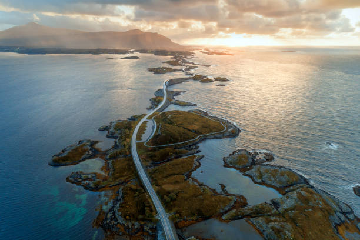

Discover Atlantica
"Explore the mystery of Atlantica, inspired by the legendary Atlantis—a fabled advanced civilization said to have vanished beneath the sea. Delve into its origins, cultural significance, and the enduring fascination it holds as a symbol of lost worlds and ancient mysteries."
History
Atlantica, often linked to the mythical Atlantis, originates from Plato's dialogues (Timaeus and Critias) around 360 BCE. He described it as an advanced civilization that sank into the ocean due to moral decay and divine punishment. While considered allegorical, the tale has inspired countless myths, theories, and cultural works. No evidence of Atlantis has been found, but it remains a symbol of lost civilizations.
Atlantica, the city where the horizon merges the sky with the ocean, offering dreams a canvas as vast as the sea.
Attractions
Main Attractions
- Altantis Tower
- Deep Sea Museum
- The Oceanic Bridge
Local Favourites
- Merman's Street
- Neptune's Diner
- Atlantica Beaches
- North Beaches
- Reel Bay
- Mermaid Cove
City Statistics
| Attribute | Value |
|---|---|
| Population | 5 Million |
| Landmark | 25 |
| Parks | 18 |
| Schools | 120 |
| Beaches | 7 |